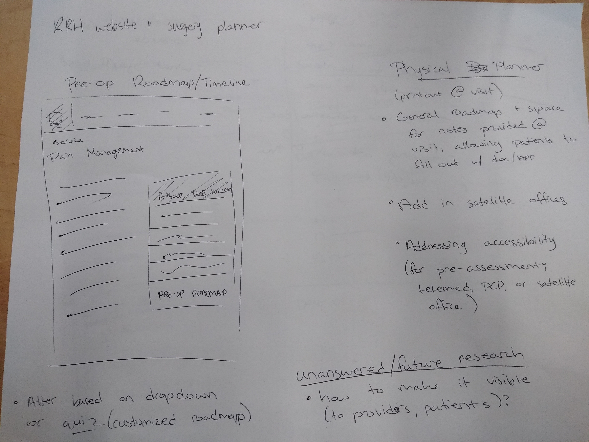
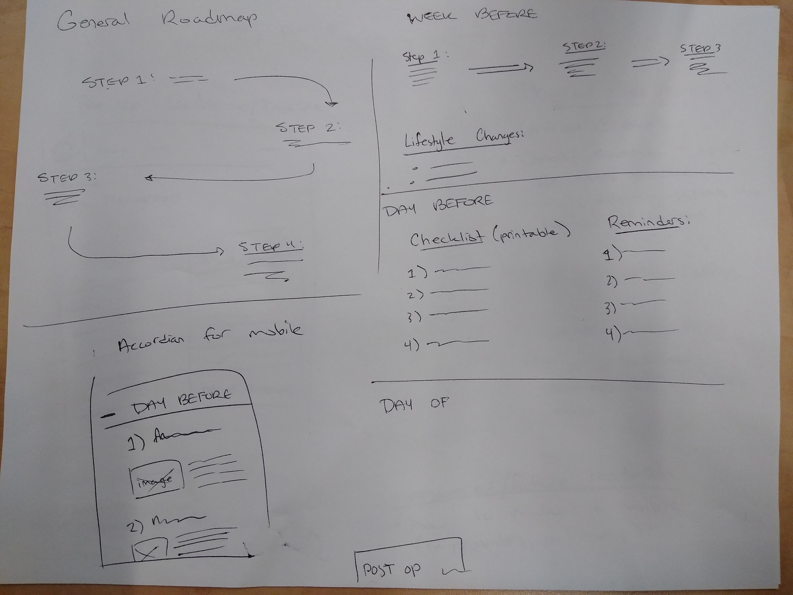
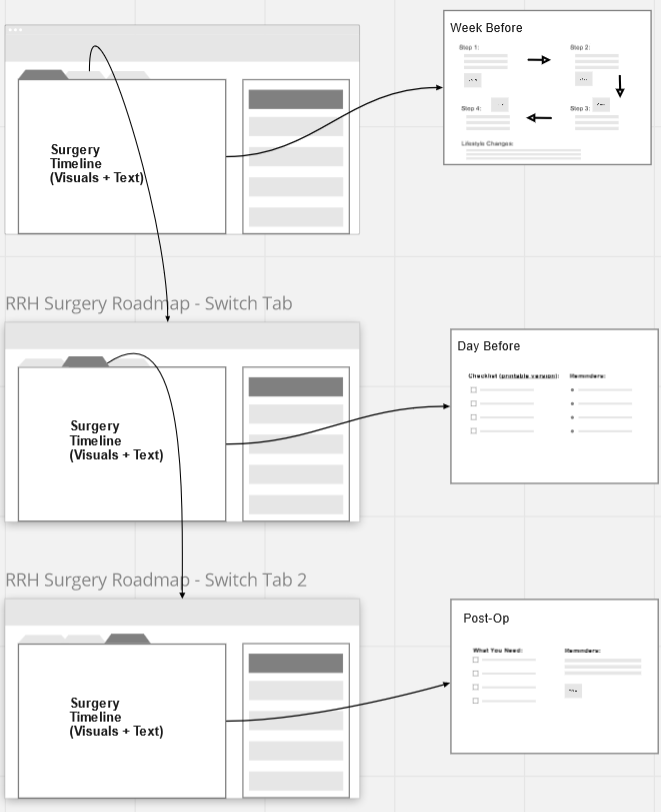
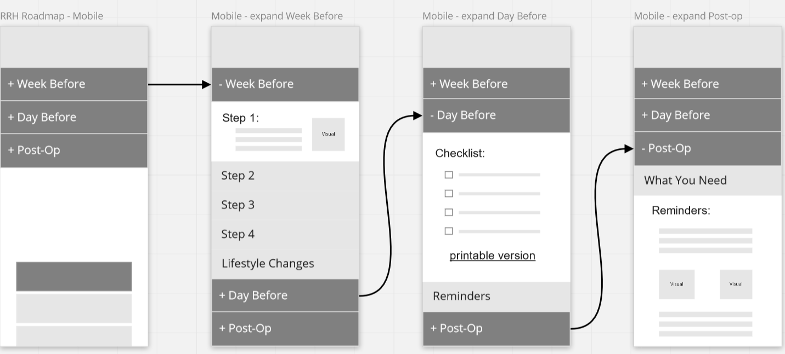
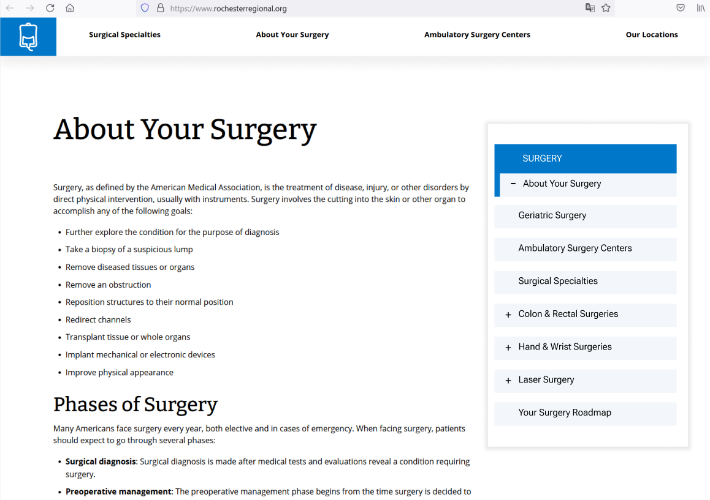
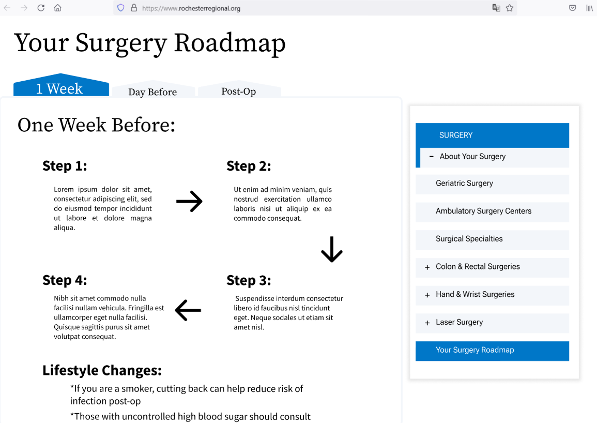

Collaborating in a multidisciplinary group, our team was presented a challenge by Rochester Regional Health regarding patient education for planned surgeries. Using a partnership design approach, involving our client expert in the design process, our team redefined the presented problem and suggested a multi-pronged solution.
My role was to assist with the informal interview we conducted with the client expert, translate our findings into a design, and create a set of wireframes as well as a refined mock-up. We used Miro to collate information and create the wireframe, as well as Figma to craft the finalized designs.
 After organizing our data from the interview in the Miro, I drafted the wireframes inside the board. The original problem statement regarded lack of patient education for pre-op, and sought an app to rectify the problem. Our redefined problem considered how to effectively disseminate information for patients. In doing so, we delivered a solution that was three parts. The first, an update to the Rochester Regional Health website, adding on to the general information already provided on pre-op preparation. In addition to updating the website, we formatted the page into a print-friendly handout that could be provided to patients at appointments. This was done to ensure that patients that may not have a computer or internet access have the ability to access this information. The second, informational posters with QR codes that could be displayed in offices or waiting rooms, with the QR code directing the user to the updated RRH website page on surgery. The third, a possible tablet application that is connected with RRH's MyCare that provides much more personalized and detailed information regarding the procedure.
 The wireframes for the updated webpages, including desktop and mobile.
 The finalized mock-ups created in Figma.
Having worked as an ambulatory tech before coming back to graduate school, I became somewhat familiar with the healthcare system and the unique challenges that it presents, especially in the case of introducing new technology. With this experience however, I was able to help guide the team into balancing their ideas with the client's needs and hurdles.